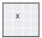
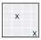
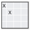
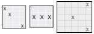

A defective pixel has a response that is noticeably different from that of the other pixels in the array under dark or uniformly illuminated conditions. Defective pixels may show up on an image as bright points (hot pixels) or as dark points (cold pixels). The pixel correction module includes processing for sensors with or without PD pixels and for both Bayer and zzHDR patterns.

Defective pixels can be caused by the following:
- Imperfections in the semiconductor processing of the sensor module (CMOS or CCD) – During manufacturing, bad pixels or clusters can be caused by leakage to or from the well, abnormal pixel sensitivity, or resistance losses.
- Dust introduced when lens is mounted – A dust particle can fall on top of the sensor when the lens is mounted.
- Age of the sensor module – Over time, a sensor module accumulates more bad pixels.
PD pixel correction concepts
A CMOS sensor can have phase pixels to speed up autofocus. One difference between phase pixels and the normal pixels in a sensor is that the location of the phase pixels is known. The PDPC module takes advantage of this location information to correct defective PD pixels that occur in those locations. Camera software detects phase pixel information in the sensor or driver information file and passes it to the simulator. Currently, the PDPC module only corrects bad PD pixels if they are on a red or blue pixel. Green pixels are not corrected at this time.
Because the PDPC module knows the location of a defective phase pixel, it has all the information it needs to make a correction based on the neighboring pixels. Thus, there is no parameter tuning required for PD pixel correction. The PD pixel correction supports sensors that use the Bayer and zzHDR pattern.

Non-PD pixel correction concepts
The pixel correction module includes processing to correct bad pixels for a non-PD pixel sensor project that uses either the Bayer or zzHDR pattern. The following table identifies the types of single and couplet pixel defects that can be corrrected in the flat region.
| Type of defect | Example | Supported |
|---|---|---|
| Single |  | Yes |
| Same channel couplet |  | Yes |
| Cross channel couplet |  | Yes |
| Cluster ≥ 3 |  | No |
- MP is the maximum pixel value from among the neighboring pixels of the same channel
- Fmax is a user-defined threshold factor that specifies which pixels to correct
- Offset is a user-defined adjustment value that further refines the threshold for a bad pixel or pixel couplet
- If the value of the bad pixel is greater than the result, replace the bad pixel with the value of MP. If the bad pixel value is less than or equal to the result, do not change the bad pixel value.
The following figure is a sample plot of the hot pixel equation. 
- mP is the minimum pixel value from among the neighboring pixels of the same channel
- Fmin is a user-defined threshold factor that specifies which pixels to correct
- Offset is a user-defined adjustment value that further refines the threshold for a bad pixel
- If the value of the bad pixel is less than the result, replace the bad pixel with the value of mP. If the bad pixel value is greater than or equal to the result, do not change the bad pixel value.
The following figure is a sample plot of the cold pixel equation. 
Coordinating pixel correction with other BPS modules
- If the sensor used for the project is a PD sensor, PD pixel correction must be enabled
- The pixel correction module does not rely on other modules to be tuned, but if the pixel correction module is not properly tuned, all modules that follow it in the pipeline are impacted
- For pixel correction tuning, only enable the basic modules that are needed to result in final YUV images
- Consider disabling bad pixel correction module while tuning other modules to avoid any negative impact of untuned pixel correction parameters.